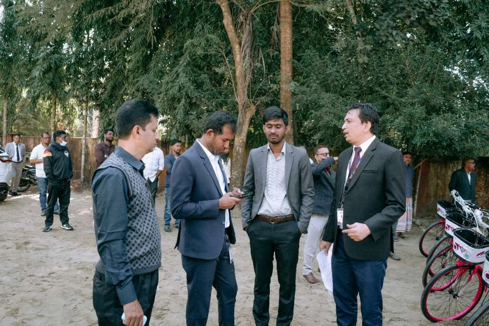

Market &
competitor research
Research into companies, products, pricing, market conditions and business positioning.
Competitor profiles, comparison matrices, market landscape briefs and documented findings.
For Laura Troyani and the PlanBeyond team
Market research, data collection and analysis, supported by professional experience in climate, development and banking.
I am Nazmus Sakib, an independent research consultant based in Bangladesh. I am interested in contributing to your work through individual research tasks, project-based assignments and ongoing support.
Independent practice.
Experience across research and institutions.
PlanBeyond’s published work brings together customer understanding, competitive research and practical business decisions.
Your assignments across financial services, energy and technology are particularly relevant to my experience. I see opportunities to contribute through structured research, data preparation, evidence review and the documentation that supports client delivery.
I would welcome the opportunity to work within your team’s established approach, taking responsibility for agreed tasks and preparing outputs that are clear, traceable and ready for review.
The published work that informed this introductionSupport for a complete work package or the individual tasks that help a larger project move forward.
Research into companies, products, pricing, market conditions and business positioning.
Competitor profiles, comparison matrices, market landscape briefs and documented findings.
Public-source data collection, web scraping, extraction and dataset preparation.
Cleaning, deduplication, classification, source verification and consistent working records.
Preparing datasets for analysis, reviewing patterns and presenting information through Excel, Power BI and concise reporting.
Understandable evidence, with observations kept within what the available data supports.
Literature and policy reviews, background research, findings briefs, reports and presentation support.
Material organized across sources, supporting references checked and clear professional documents prepared.
Research tracking, stakeholder coordination, meeting documentation and progress reporting.
Responsibilities agreed around your project’s requirements and established working process.
Two professional settings that shape how I gather evidence, work with stakeholders and prepare information for decisions.

RESEARCH + DEVELOPMENT
My work with the International Centre for Climate Change and Development involved community engagement, climate vulnerability assessment, stakeholder coordination and adaptation planning.
Through the Climate Resilient Migrant Friendly Town programme, I contributed to research and planning activities across four urban locations in Bangladesh.
This involved gathering field evidence, understanding different stakeholder perspectives and helping translate findings into planning documents. It provides a relevant foundation for assignments involving climate programmes, community needs and development evidence.
View climate research experience
BANKING + INSTITUTIONS
My banking experience includes communication, training coordination and institutional documentation.
My current work with MTB Foundation involves project appraisal, partner coordination, implementation monitoring, field visits and management reporting.
These responsibilities have strengthened my understanding of how information moves through an institution, from an initial proposal to review, implementation and follow-up. I bring that attention to accuracy, documentation and practical use to my independent research work.
View institutional experienceExamples from my independent consulting and analytical practice.
CASE 01 / PACA, FRANCE
Data extraction, structuring and delivery
An independent assignment involving school contact information across Provence-Alpes-Côte d’Azur, France.
The engagement grew from an initial target of 5,000 records to more than 14,000 delivered records. Information from six regional source files was organized into a consistent structure covering schools, locations and contact fields.
The project demonstrates my ability to handle detailed data work and prepare an output around the client’s next action.
View the case studyCASE 02 / INDEPENDENT ANALYTICS
Data preparation, analysis and visual communication
Independent projects covering regional sales performance and the relationship between accident records and environmental conditions.
My contribution included data cleaning, integration, KPI development, comparative analysis and dashboard preparation.
These projects show how I organize available information into analytical views that support further questions and informed interpretation.
View analytical workClarify the question, intended use, available information and expected output.
Confirm responsibilities, working format, timeline and review points before starting.
Collect and organize the evidence, check consistency and identify missing or uncertain information.
Provide the output with supporting references, relevant notes and an explanation of the work completed.
I would welcome an opportunity to support PlanBeyond on a forthcoming assignment.
This could involve a defined research work package, ongoing assistance or individual tasks within a larger project. I am comfortable working to an established brief and adapting the output to your team’s requirements.
We can agree the scope, availability, timeline and commercial terms around the work involved.
Independent Research Consultant
nsakib.live@gmail.com Discuss a project